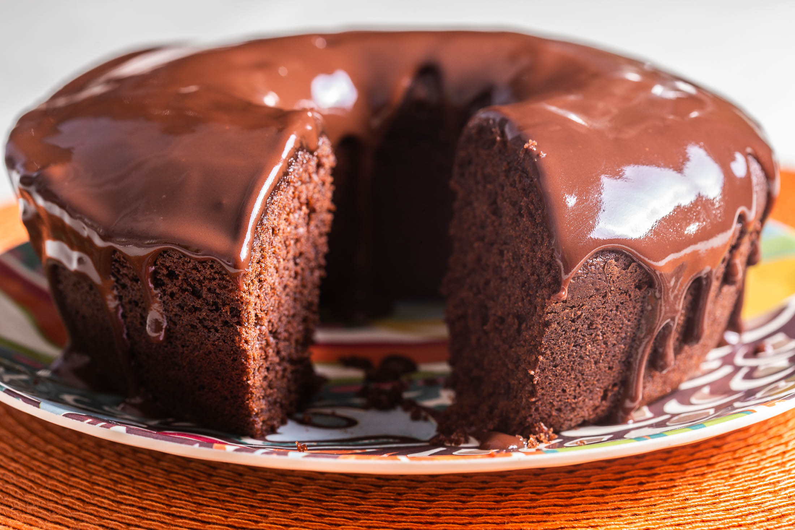

Doces · Tortas e bolos
Bolo de chocolate com calda

Ingredientes
- Massa: 50 g de chocolate amargo picado, ¾ xícara de manteiga, 1½ xícara de açúcar, 3 ovos, 1 colher (chá) de baunilha, 2 xícaras de farinha, 2 colheres (chá) de fermento, ½ colher (chá) de sal, ¾ xícara de leite
- Calda: 1 colher (sopa) de manteiga, 1 xícara de açúcar, ½ xícara de chocolate em pó, ¼ xícara de leite
- 120 g de chocolate branco picado para decorar
Modo de preparo
- Derreta o chocolate amargo. Misture manteiga e açúcar; junte ovos, baunilha e chocolate.
- Acrescente farinha, fermento e sal peneirados alternando com leite.
- Asse em forma de rosca de 26 cm untada, forno 180 °C, até firmar. Desenforme e esfrie.
- Para a calda: ferva manteiga, açúcar, chocolate em pó e leite; espalhe no bolo frio.
- Derreta o chocolate branco e faça fios decorativos. Congele.
Observação
Congelamento: cobrir com plástico; depois saco sem ar. Descongelamento: ~2 h em temperatura ambiente.